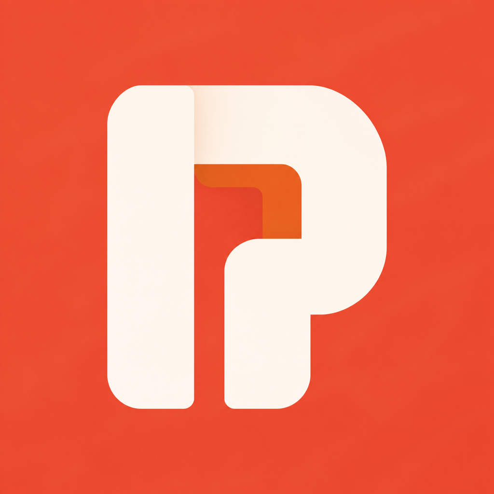

用 "海边 日落" 匹配短语，用 -草稿 排除词。
按 Enter 提交搜索后，记录会显示在这里。
清除这台电脑的最近搜索？
正在读取素材库…
创建本地素材库，或打开已有的见藏和 Eagle 素材库。
从上往下使用第一条符合全部条件的规则。采集时可临时改选保存位置。
域名包含其子域名。图片格式按网址后缀或格式参数识别。
在浏览器扩展管理页开启开发人员模式，选择「加载解压缩的扩展」，再选择下方打开的文件夹。拖图采集默认开启。
从此文件夹加载的扩展会随见藏更新，采集空闲时自动重新加载。
首次采集或点击浏览器工具栏的见藏图标时，在见藏里允许连接。拖动网页图片即可选择保存位置，也可在网页中右键快速保存。
正在读取版本…
文件夹颜色